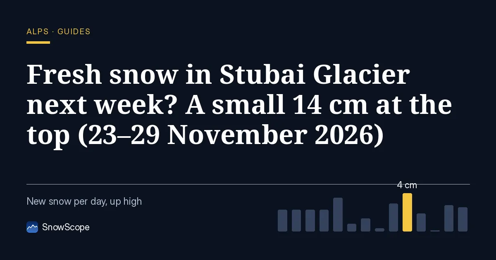

Fresh snow in Stubai Glacier next week? A small 14 cm at the top (23–29 November 2026)
Next week brings modest snow to Stubai Glacier across all heights. The upper slopes near 3100 m will see around 14 cm in the middle of the forecast, while mid-mountain gets 12 cm and the base 12 cm. Thursday 26 November shapes up as the day with the most snow.
See the live snow forecast for Stubai Glacier in the SnowScope appSnow depth, powder alerts and the 3D map, free.
Which day, which slopes
Thursday 26 November is the peak of the week, with 4 cm expected at the top (ranging from less than 1 cm to 8 cm depending on the forecast spread). The Schaufelspitze and Gaiskar glacier will hold the deepest snow because they sit at high altitude and face away from the warmth of the afternoon sun. The glacier runs—the coldest terrain near Innsbruck—should preserve whatever falls.
Wednesday 25 and Sunday 29 also bring snow, each day adding 3 cm at the summit (up to 5–6 cm in the best case). The pattern is familiar for late autumn: scattered falls rather than a continuous dump. For softer turns on fresh snow, Thursday morning is your window.

Snow depth by elevation: top to bottom
The forecast stack at Stubai Glacier runs like this: 14 cm near 3100 m, 12 cm at mid-mountain around 2500 m, and 12 cm near the base at 1800 m. Snow loss on the way down is minimal—a sign that if rain threatens, it will threaten everywhere.
The uncertainty is wide: at the top, the range stretches from 2 cm to 25 cm. At the base it is 2 cm to 21 cm. One scenario delivers a skiable week; another leaves almost nothing fresh. Mid-week conditions and updated forecasts will narrow this spread.
This week versus next week
Before the weekend arrives, Stubai Glacier accumulates only 9 cm at the top (Tuesday 17 through Friday 20 November). That is enough to dust the high terrain but not to transform it. The bulk of this fortnight's snow waits for the second week.
If you are thinking of an early-season visit to this Innsbruck playground, the second week of the forecast is when snow depth improves most. This week is a preview; next week is the main event.
How the air temperature shapes the snow line
With 14 cm at the top and 12 cm at the base, nearly all the week's precipitation falls as snow rather than rain. Stubai Glacier sits high enough that even modest cold holds snow across all elevations. The Mutterberg valley station at the base is the first zone to suffer if a warm spell moves in.
The glacier terrain is your insurance against thaw. By staying on Schaufelspitze and Gaiskar, you stay above the zone where mild air turns powder into slush.
Nearby resorts: who gets more, who gets less
Sölden, 12 km away, sits at 13 cm for the week—1 cm less than Stubai Glacier. Obergurgl, 14 km north, also forecasts 13 cm. Hintertux, further south at 42 km, edges ahead with 14 cm, matching Stubai. Snow totals alone will not decide between these resorts next week.
Lift status, opening dates, and which slopes face the right direction matter far more. Check each resort's conditions before you go.
What the forecast cannot pin down
Confidence is low this far ahead. The Forecasts disagree sharply on where the snow will concentrate and how much each forecast day will add. By Wednesday 25 November, the picture will sharpen.
Early in the season, rocks and thin coverage are always risks under new snow. Inspect the piste before you commit to side terrain, and respect the regional avalanche bulletin if you venture off-piste. New snow in November can mask hidden hazards.
Tips for skiers
- Aim for high terrain (Schaufelspitze, Gaiskar glacier) on Thursday 26 November morning to find the softest snow before wind and sun harden it.
- If you ski off the groomed runs next week, check the official avalanche bulletin for the region: fresh snow raises new avalanche risk, and the regional service is your guide.
- With only 14 cm forecast at the top, this is a week to ski groomers and stable glacier terrain, not to hunt deep powder.
- Confirm the resort's lift status before you travel: snow on the mountain and open lifts are not the same thing in November.
- Watch the forecast mid-week and update your plan on Tuesday or Wednesday; the first days of this forecast are more reliable than the end.
About these numbers
Resort snow depths are the deepest snow on the resort's upper slopes on the date shown; they are estimates for an area, not a measurement at one point. Forecasts can change. Always read the official avalanche bulletin before going off-piste.
Cite this report
For research, teaching or the press: the numbers and charts are free to reuse under CC BY 4.0 with this citation.
SnowScope (2026), Fresh snow in Stubai Glacier next week? A small 14 cm at the top (23–29 November 2026), https://snowscope.app/blog/en/2026/11/stubai-snow-forecast-next-week-23-29-november-2026.html, accessed 2026-11-16
SnowScope (Atlas Labs). (2026, November 16). Fresh snow in Stubai Glacier next week? A small 14 cm at the top (23–29 November 2026). SnowScope snow reports. https://snowscope.app/blog/en/2026/11/stubai-snow-forecast-next-week-23-29-november-2026.html
BibTeX
@misc{snowscope2026stubaisnowforecastnextwe,
author = {{SnowScope (Atlas Labs)}},
title = {Fresh snow in Stubai Glacier next week? A small 14 cm at the top (23–29 November 2026)},
year = {2026},
month = nov,
howpublished = {\url{https://snowscope.app/blog/en/2026/11/stubai-snow-forecast-next-week-23-29-november-2026.html}},
note = {Published 2026-11-16 11:46 UTC; accessed 2026-11-16}
}· CC BY 4.0 · Methods, data and tools →
Stubai Glacier: snow and temperature by height, this winter vs last (tools) →
Follow Stubai Glacier
Free: a message when fresh snow is coming, and the forecast every morning.
More snow reports

Austria gained 11,600 km² of snow in seven days. Stubaier Gletscher leads with 67 cm. Data from 22 November 2026.

Austria before Christmas: Galtür EUR 258 and Kühtai EUR 269 for 6 days with 30 cm in over 90 % of winters; glaciers cost more, small hills are a gamble.

La Rosière top holds 24 cm on 11 November; next seven days forecast 108 cm at 2799 m, 61 cm at mid-mountain.